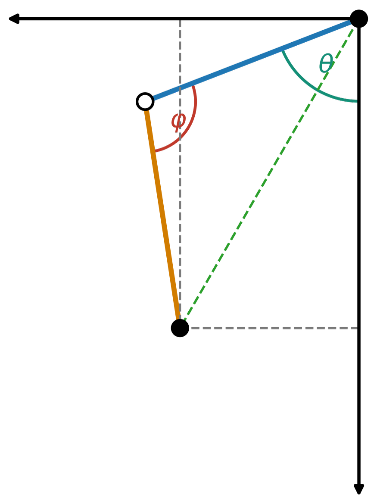

IEEE RAAICON · Accepted, 2026
Kinematic Analysis, Trajectory Generation, and Low-Cost Hardware Evaluation for a Quadruped Robot Leg
Abstract
Inverse kinematics is a fundamental component of quadruped robot locomotion that converts desired foot positions into actuator commands. This paper presents a coordinate-keyframe-driven analytical inverse kinematics framework for a 3-degree-of-freedom quadruped robot leg. The implementation combines closed-form geometric inverse kinematics and Cartesian keyframe trajectories with a low-cost, embedded servo-controlled prototype. To simplify the inverse kinematics problem, the 3-D foot position is decomposed into an x-z projection for lateral shoulder rotation and an r-y two-link planar model for shoulder and knee motion. Forward kinematics is used to reconstruct and evaluate the resulting trajectory. A front-right leg prototype was built using high-torque servo motors, carbon-fiber leg sections, an ESP32-C6 controller, and a PCA9685 servo driver. The prototype was evaluated using a scale-calibrated side-view camera-tracking setup. Experimental results showed that the measured foot path followed the predicted IK-to-FK trajectory, with a symmetric nearest-curve mean deviation of 0.37 cm and an approximate symmetric Hausdorff maximum deviation of 1.74 cm. The higher phase-matched RMSE of 4.11 cm was mainly attributed to servo delay and vertex rounding. The results indicate that the proposed framework is simple and interpretable for planar single-leg control and provides a practical basis for future low-cost educational quadruped development.
Keywords
Quadruped robots; geometric inverse kinematics; Cartesian keyframes; foot trajectory tracking; embedded control; low-cost robotics.

